内容流量 / 四竞品 / 真实用户 / 当前产品 / 页面优化
AI 李中莹竞品分析与小程序产品决策报告｜审查修订版
从内容与流量进入服务，以四竞品路径作为参照，再用真实用户数据检查当前能力，最终落到一套小程序优化方案。
核心结论
内容负责让用户看见问题，成长对话负责持续澄清；会员和邀请分享保障持续对话，微练习、反馈与复练形成价值，课程和真人服务在基础价值成立后承接。
第一部分
先说明报告结论
明确决策、证据和不能得出的结论。
01 决策摘要
决策摘要：先把用户问题变成可持续完成的成长任务
报告不以增加更多入口为目标，而以“问题澄清—一个微练习—反馈—记录—复练”为下一阶段主线。
本章回答什么下一阶段最重要的产品决策是什么？
内容入口生活问题先于术语
关系、亲子、情绪、沟通和成长内容负责让用户看见自己的问题。
持续权益会员前置
会员保障持续对话；非会员成功邀请 1 人注册，获得 1 天会员时长。
行动闭环练习与复盘
对话后经用户同意进入一个相关微练习，再形成反馈和复练。
商业承接课程后置
课程、训练营和真人服务在基础价值成立后出现。
报告同时覆盖内容与渠道、价格与课程，并加入四竞品实机、会员与非会员数据和当前产品证据。
本章结论与下一步以成长对话为主入口，先补齐一个微练习、反馈、记录和复练；商业服务在服务闭环成立后承接。
02 分析范围、证据来源与判断边界
这份报告看了什么，哪些结论能相信
本次材料可以帮助判断内容如何包装、用户被带向哪里、承接入口如何设计；真实成交、投放成本、ROI、LTV、留存、毛利等仍需要内部数据或授权数据验证。
本章回答什么本报告使用了哪些证据，哪些结论不能据此得出？
本报告支持
路径与形态判断
账号主页、内容主题、公众号菜单、直播入口、H5课程页、微信小店SKU、公开价格带、当前小程序功能能力。
不直接判断
真实经营效率
真实转化率、CAC、ROI、LTV、留存率、完课率、毛利、广告消耗、私域成交率仍缺少后台或授权数据。
样本处理
主线不做竞品名单堆叠
本版聚焦团长锚点、NLP课程/社群/学习入口样本，以及这些样本如何映射到当前小程序的产品线。
本章结论与下一步页面和路径可以确认，效果与经营效率不能由截图推断；缺失口径进入附录待补证。
第二部分
内容和流量如何进入持续服务
把团长、NLP、公域、微信和产品阶梯连接到成长对话。
03 黄启团内容样本与专业角色
内容怎样让用户先看见自己的问题
我们不复制团长的 IP，也不照搬课程，而是拆它的链路：内容信任、微信生态入口、课程/商品/直播承接。
本章回答什么内容怎样建立信任，让用户愿意停下来？
关键发现
团长不是单点卖课，而是在多个内容场景里持续建立信任
小红书主页、置顶视频、视频号直播、公众号/H5、微信小店、图书和长访谈共同构成了一个 IP 型心理成长样本。它更像“内容信任资产 + 微信生态承接”，而不是单一课程货架。
对我们的机会
小程序不能孤立地展示功能，需要接住内容用户的具体卡点：先做问题诊断，再给练习，再把学习结果沉淀成报告和课程适配。
现场样本：小红书主页
可见账号定位、简介、粉丝/获赞收藏和置顶笔记入口。
直播预告与预约
说明微信生态里存在直播承接，适合作为小程序诊断和预约入口的上游场景。
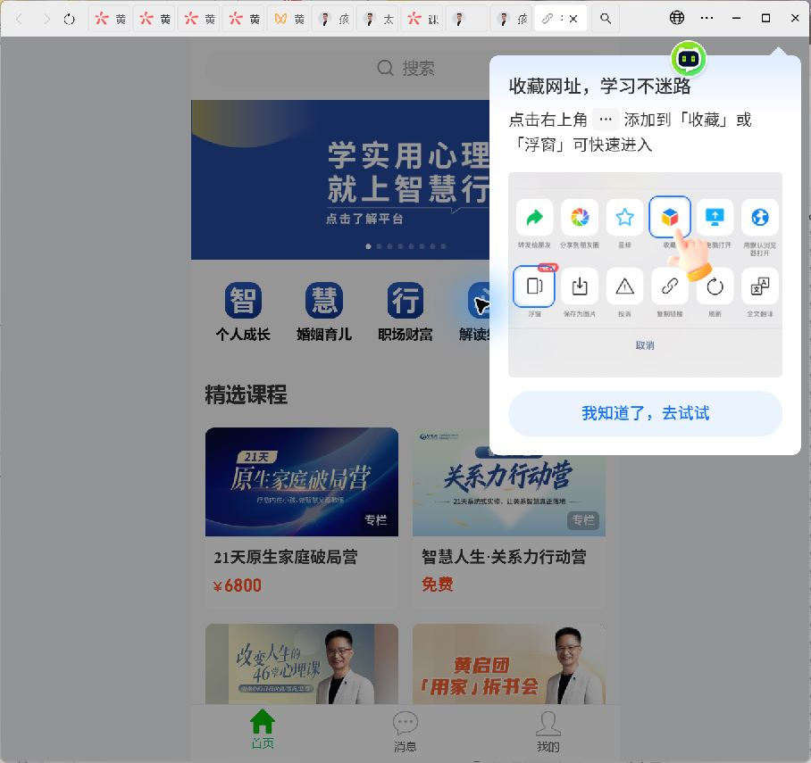
线上学堂入口
可见免费、9.9、99、788、1980、6800等价格梯度信号。
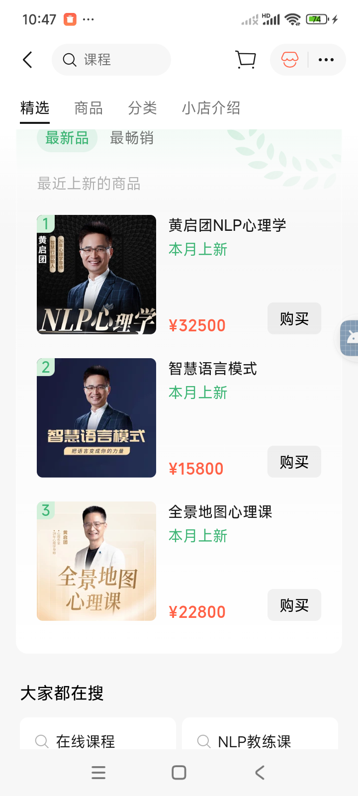
课程商品卡组
可见课程 SKU、价格带和商品化承接方式，适合反推小程序的课程适配入口。
团长公域平台与流量获取拆解
团长的公域不是单个平台爆发，而是多个平台各自承担一个漏斗角色：短内容负责让用户“被说中”，长内容负责解释和信任，微信生态负责直播、课程和商品承接。
| 平台/触点 | 主要内容钩子 | 内容承载形态 | 流量角色 | 下一步承接 | 对小程序的启发 |
|---|---|---|---|---|---|
| 小红书 | 关系受伤、精神内耗、命运改变、放下对错 | 主页定位、置顶短视频、封面大字、人物口播/访谈切片 | 痛点种草与IP初识 | 主页关注、搜索、私信、跳转微信生态 | 首页必须先按生活问题分流，而不是先展示功能。 |
| 抖音 | 课程现场、情绪金句、心理/情感短钩子 | 短视频、直播/课程现场片段、推荐流曝光 | 快速触达与情绪触发 | 账号页、直播、搜索、同名IP追踪 | 适合用短钩子测试“关系/亲子/内耗”哪个主题更能带来诊断点击。 |
| 视频号 | 直播预告、主题课、预约提醒 | 直播列表、预约页、回放/直播间 | 微信内信任加深 | 公众号、小店、课程页、客服 | 小程序可作为直播后的诊断报告与课程适配入口。 |
| 公众号/H5 | 长文解释、案例、读经典、课程说明 | 公众号菜单、文章、H5课程页、线上学堂 | 深度解释与转化前教育 | 专栏购买、学堂、客服/二维码 | 文章末尾不应只放购买，应放“测评/诊断/课程适配”。 |
| 微信小店/课程页 | 价格阶梯、课程SKU、服务体验 | 商品卡、课程介绍、购买按钮、资质/服务信号 | 商品化承接 | 购买、预约、训练营/高价课咨询 | 小程序要补“买前判断”和“买后练习”，不是复制货架。 |
| B站/小宇宙/图书 | 长访谈、书籍、系统解释、专业背书 | 长视频/播客/图书页 | 信任资产和搜索长尾 | 搜索、公众号、课程页 | 适合作为“为什么要系统学”的解释材料，沉淀到小程序学习路径。 |
这张表只讨论公开可见路径，不推断真实流量占比、付费转化、广告消耗或私域成交。
团长流量路径：先被内容击中，再被微信生态承接
01 内容钩子生活问题
关系、亲子、内耗、原生家庭、命运改变，比“NLP技巧”更适合冷启动。
02 IP信任人物与故事
创始人自述、专业身份、长期内容和图书访谈共同降低陌生感。
03 微信承接公众号/视频号
直播预约、文章解释、菜单入口，把用户留在微信生态继续教育。
04 商品阶梯专栏/课程/训练营
从低价内容到系统课再到高价课，逐步提高用户承诺。
05 小程序机会诊断与练习
我们不复制IP，而是在内容和课程之间补“问题诊断、练习、报告”。
本章结论与下一步团长样本提示内容应先让用户看见生活问题，再把方法和服务放在后面。
04 NLP 内容主题与用户进入方式
用户从生活问题进入，NLP作为解决方法出现
这里先从团长和其他 NLP 样本里抽出内容/产品形态，再反推星星产品的第一批方向，而不是从课程目录硬拆。
本章回答什么用户通常从什么问题进入，NLP内容承担什么角色？
NLP品类样本：市面上卖的不是单一“课程”，而是多种承载形态
NLP相关产品大致分成线上学堂、认证/执行师课、俱乐部/社群、企业内训、海外平台化课程几类。它们共同说明：用户最终可能购买课程，但前面需要一个能理解问题、降低术语门槛、持续练习的入口。
| 样本类型 | 产品形态 | 内容吸引点 | 付费/承接方式 | 对我们的小程序结论 |
|---|---|---|---|---|
| NLP哲学商学堂/线上学堂 | 服务号、学习入口、商品专区、课程页 | 系统学习、心理/沟通/成长主题 | 低价商品、课程包、学堂购买 | 小程序需要有“课程适配”和“练习沉淀”，而不是只做聊天入口。 |
| NLP学院/执行师/认证课 | 系统课、认证班、执行师训练、线下/线上混合 | 职业成长、专业身份、系统技术 | 高客单课程、认证费用、训练营 | NLP术语可以放在后段解释，前段先用用户问题引导。 |
| NLP俱乐部/会员社群 | 例会、练习会、会员社群、共修活动 | 持续练习、同伴场、成长陪伴 | 会员费、活动费、训练营升级 | 星星产品可以先做轻量练习包，再观察是否需要社群陪练。 |
| 小红书/抖音NLP个人IP | 短视频、口播、直播、私信/主页承接 | 关系、情绪、亲子、原生家庭、内耗 | 公开课、私域咨询、课程报名 | 我们优先测试“问题诊断页”和“7天练习包”，再决定课程承接。 |
| 海外在线学院/Udemy类 | 录播课、证书课、专题包 | 技能化学习、低价入门、证书/兴趣 | 单课购买、会员、平台课程包 | 适合参考模块化结构，不适合照搬平台低价课海量模式。 |
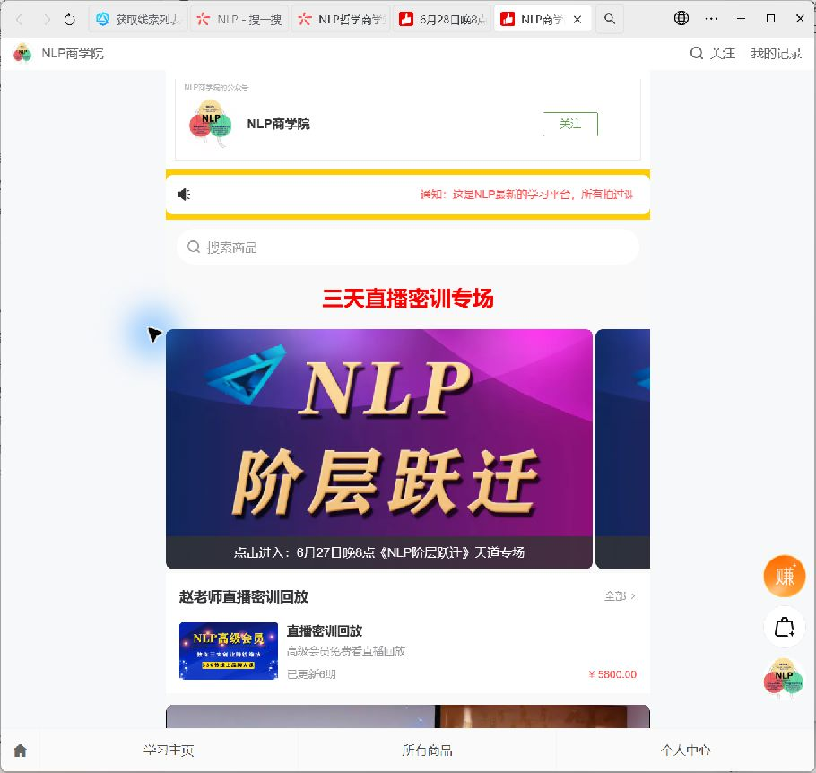
NLP哲学商学堂学习入口
可见服务号/学习入口/课程承接形态，说明 NLP 内容常以线上学堂承载。
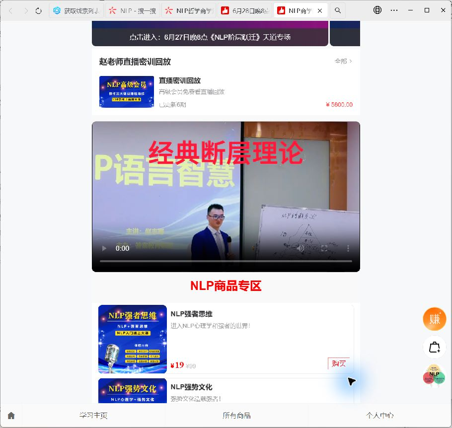
NLP商品专区
可见商品专区和课程购买入口，适合对照我们的星星产品和课程适配页。
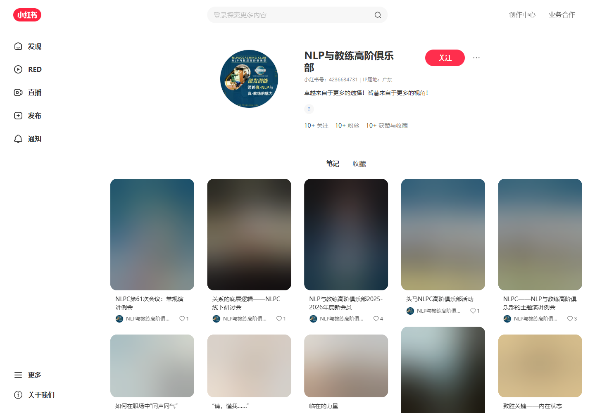
小红书NLP俱乐部样本
可见俱乐部、会员/例会/练习场景线索，说明社群型承载也需要被纳入产品线判断。
小红书内容分类：团长样本更像“问题故事 + 心理模型 + IP信任”
小红书侧不应只看粉丝数或主页截图，关键要拆内容主题和用户为什么会停下来。下面这些主题应该成为小程序首页问题入口和星星产品第一批题库来源。
| 内容分类 | 典型标题/画面信号 | 用户被吸引的原因 | 适合的小程序入口 | 星星产品方向 |
|---|---|---|---|---|
| 关系/亲密关系 | 放下对错、看见爱、关系里受伤 | 用户容易代入具体冲突，愿意寻找一句话解决方法 | 关系沟通卡点诊断 | 关系沟通3步练习包、换框表达练习 |
| 精神内耗/情绪 | 长期和这种人呆在一起、你的精神会得病 | 强情绪标题能触发自我保护和焦虑识别 | 情绪状态识别 | 情绪急救箱、状态切换练习 |
| 命运/成长故事 | 我是如何用心理学改变命运 | 创始人故事带来希望感和IP信任 | 逻辑层次自测 | 目标行动7天练习、成长档案 |
| 代际/家庭系统 | 要经过三代人的努力、才能活得松弛快乐 | 把个人问题放进家庭系统，解释长期模式 | 家庭模式观察 | 边界表达练习、家庭关系练习包 |
| 人生转折/接纳 | 人生每个弯道都有它的风景 | 提供情绪安抚和意义重构，适合轻触达 | 今日卡点/安顿练习 | 自我接纳练习、意义重构卡 |
| NLP技巧解释 | 六层次、换框、状态切换等模型 | 对已经有兴趣的人有效，但冷启动弱于生活问题 | 技巧广场/课程练习 | NLP技巧入门包，作为后置解释 |
从竞品观察到产品结论：不是“竞品做了”，而是“用户路径缺这一段”
| 竞品侧观察 | 说明了什么 | 不能直接照抄什么 | 我们应转成什么产品动作 |
|---|---|---|---|
| 团长用生活问题而非术语吸引用户 | 冷启动内容应从关系、亲子、情绪进入 | 不照搬IP人设和课程话术 | 首页先做问题选择与今日卡点。 |
| 微信生态有直播、公众号、H5、小店连续承接 | 用户需要被逐步教育后再购买 | 不直接把小程序做成课程货架 | 小程序补诊断、练习、报告和课程适配。 |
| NLP学院/商学堂多用系统课和认证课承载 | 高价课需要系统学习理由和专业信任 | 不在第一屏堆认证和术语 | 在练习完成后解释对应NLP模型和课程路径。 |
| 俱乐部/会员样本强调练习场和同伴 | 心理成长不是一次性内容消费 | 不急着做大社群 | 先做7天练习包和打卡，再验证陪练/社群需求。 |
关系 高优先级
用户为什么点进来
关系里受伤、放不下、沟通失控，用户更容易产生自我代入。
小程序怎么接
关系沟通卡点诊断 -> 一句话换框练习 -> 关系沟通3步练习包。
高价课承接
练习结果沉淀为课程适配报告，推荐系统关系课或咨询预约。
亲子/家庭 高优先级
用户为什么点进来
父母的无力、内疚、失控感强，容易被“孩子为什么不听话”击中。
小程序怎么接
亲子沟通卡点诊断 -> 7天亲子表达练习 -> 训练营。
高价课承接
适配家庭关系、亲子导师、系统沟通类现有课程。
情绪/内耗 高优先级
用户为什么点进来
焦虑、反复、精神内耗是短视频平台的强触发点。
小程序怎么接
情绪状态识别 -> 状态切换练习 -> 情绪内耗拆解包。
高价课承接
当用户多次复练仍卡住时，再进入系统学习/咨询预约。
原生家庭 谨慎表达
用户为什么点进来
用户希望解释自己长期模式，但也容易滑向过度归因。
小程序怎么接
关系模式观察 -> 叙事重构练习 -> 边界表达任务。
边界
避免创伤治疗化表达，不承诺疗效。
命运/成长 IP信任
用户为什么点进来
从普通出身到心理学改变命运的故事，适合建立 IP 可信感。
小程序怎么接
逻辑层次自测 -> 目标行动7天练习 -> 成长档案。
内容样本
创始人自述、心理学改变命运、普通人通过学习获得改变的故事线。
读书/经典心理 信任沉淀
用户为什么点进来
书籍与长内容降低“玄学感”，让心理成长显得更有理论支撑。
小程序怎么接
读书笔记 -> 主题测评 -> 练习任务。
内容样本
读经典学心理、图书作者页、长访谈内容。
课程/直播预热 转化前置
用户为什么点进来
用户已经有学习意愿，需要知道课程解决什么、适合谁。
小程序怎么接
课程适配诊断 -> 预约直播/说明会 -> 高价课咨询。
内容样本
直播预告、课程文章、公开课/说明会类入口。
企业管理/沟通 扩展样本
用户为什么点进来
企业主/管理者关注沟通、影响力、组织关系。
小程序怎么接
管理沟通场景拆解 -> 话术练习 -> 企业内训线索。
边界
企业端需求需要企业客户材料或销售反馈验证，不从C端内容直接推断。
NLP技巧入门 后置解释
用户为什么点进来
更适合已经有兴趣的人，冷启动吸引力弱于生活问题。
小程序怎么接
换框、锚定、逻辑层次、状态切换等技巧练习。
产品原则
先讲问题，再解释技巧，不把术语放在第一屏。
本章结论与下一步生活问题是入口，NLP是可被转译的方法；下一章继续判断不同渠道分别承担什么角色。
05 公域流量来源与平台角色
不同渠道分别承担问题发现、信任建立和返回提醒
小红书更像痛点种草，视频号更适合微信内直播承接，公众号适合长文解释和课程植入，小店/H5负责商品化和课程页。
本章回答什么不同公域渠道分别承担什么任务？
| 平台 | 用户状态 | 内容角色 | 常见下一步 | 我们的机会 | 现场材料 |
|---|---|---|---|---|---|
| 小红书 | 被问题击中，轻度关注 | 痛点种草、封面钩子、IP初识 | 主页、置顶笔记、私信/搜索 | 用问题诊断页接住内容用户 | 主页、置顶视频、公开视频详情 |
| 抖音 | 快速浏览，情绪触发 | 短视频钩子、课程现场、话题推荐 | 账号页、直播、搜索 | 适合投放/测试短钩子，但不推断ROI | 公开视频页、心理/情感推荐页、NLP候选账号 |
| 视频号 | 微信内信任更近 | 直播、回放、预约、微信生态闭环 | 直播预约、小店、公众号 | 小程序可承接直播后诊断与报告 | 直播预告、直播详情、微信小店入口 |
| 公众号 | 愿意读解释和案例 | 长文解释、课程植入、服务菜单 | H5课程页、二维码、客服 | 文章末尾进入测评/课程适配 | 服务菜单、读经典专栏、线上学堂 |
| 微信小店/H5 | 已有购买或了解意愿 | 商品化承接、价格带展示 | 购买、订阅、报名 | 小程序补诊断、练习和报告沉淀 | 商品卡组、课程页、公开价格带 |
| B站/播客/图书 | 需要长内容信任 | 深度解释、IP背书、长尾搜索 | 搜索、公众号、课程页 | 沉淀为“为什么要系统学”的解释材料 | 课程资源、图书页、长访谈内容 |
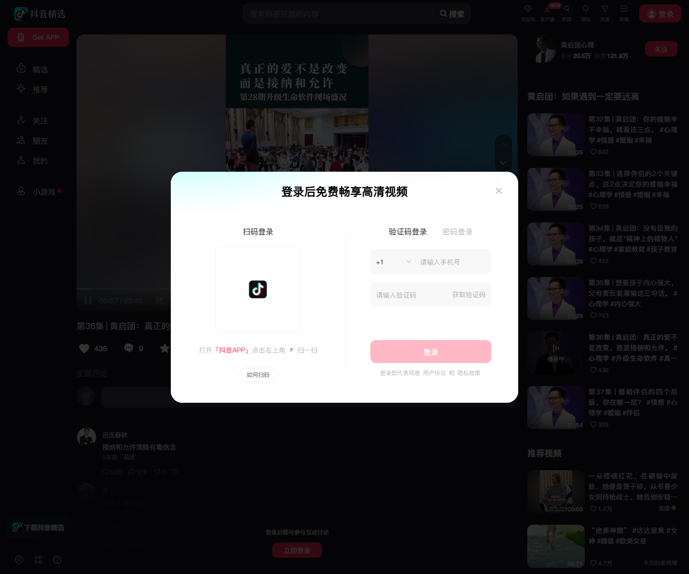
抖音公开视频页
可见课程现场短视频主题，适合观察内容钩子和直播/课程前置表达。
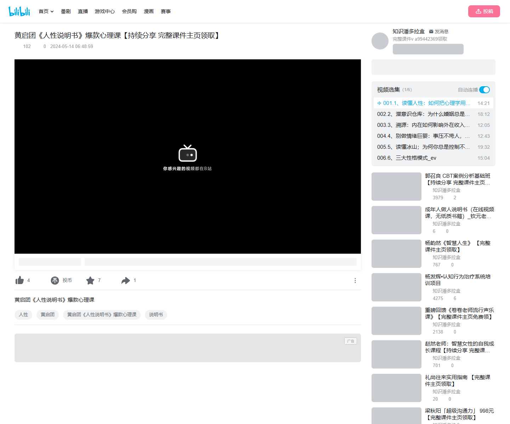
B站课程资源
可见相关课程资源传播和互动信号，官方归属需谨慎。
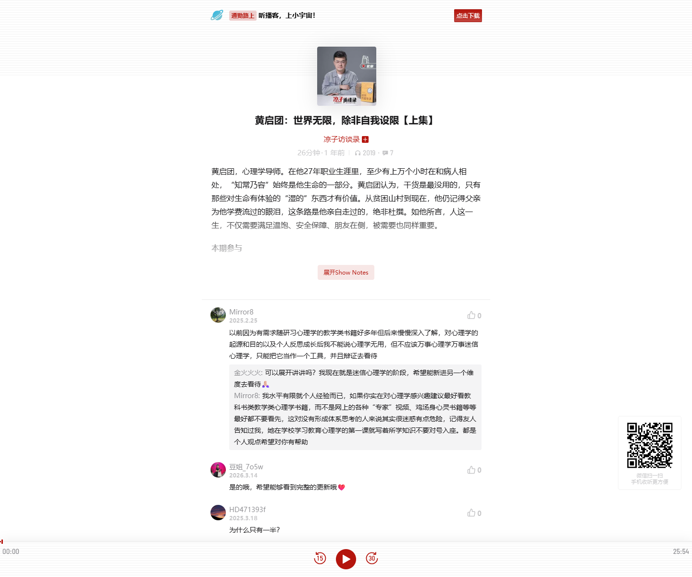
小宇宙长访谈
长内容更像信任补强，不直接证明私域转化。
NLP 品类样本对我们到底有什么用
当前分析不继续扩展新竞品。当前样本只用于判断“承载形态”和“小程序可借鉴的产品动作”，不能证明任何竞品真实成交、ROI、留存或私域规模。
NLP 学院 / 认证课
证明系统学习需要前置解释
可确认：用户需要先理解课程解决什么、适合谁、为什么要系统学。
不确认：不能证明我们照做认证课就能转化，也不能证明高价课真实成交效率。
适合参考：课程适配报告、学习路径说明、阶段任务拆解。
不适合照抄：直接堆认证名词、把体系课程放到冷启动第一屏。
轻证据：NLP_SAMPLE_ACADEMY
NLP 俱乐部 / 会员
证明持续练习和陪伴有产品空间
可确认：心理成长不是一次性内容消费，需要复练、打卡、陪伴和成长档案。
不确认：不能证明社群留存、续费率或运营成本。
适合参考：会员权益、练习任务、报告沉淀、复训路径。
不适合照抄：重运营社群和大而全课程库。
轻证据：NLP_SAMPLE_CLUB
小红书 / 抖音个人 IP
证明冷启动内容要从生活问题进入
可确认：关系、亲子、情绪、成长比“NLP术语”更容易触发用户代入。
不确认：不能证明广告效果、真实点击成本或付费转化。
适合参考：首页问题入口、对话首轮标签、星星产品主题排序。
不适合照抄：复制 IP 人设、复制单条爆款话术。
轻证据：XHS_DOUYIN_TOPIC
海外平台 / 模块化课程
证明课程可以模块化，但不能照搬低价海量模式
可确认：把复杂技能拆成模块、路径和练习，有利于小程序承接。
不确认：不能证明海外低价订阅、海量课库适合当前业务。
适合参考：星星产品按问题模块化、技能详情页结构化。
不适合照抄：以课程数量作为主要卖点。
轻证据：NLP_SAMPLE_MODULAR本章结论与下一步渠道负责触达和信任，不负责单独完成成长服务；后续需要微信和小程序承接。
06 微信生态、持续服务入口与价格阶梯
微信负责让用户回来，产品阶梯负责承接不同深度的需要
06 微信生态与持续服务入口
微信生态的价值，是把内容、直播、商品、课程和私域入口放在同一环境里
对我们来说，小程序不应该简单复制课程展示页，而应该补上“诊断和练习沉淀”这一段。
本章回答什么微信生态和价格阶梯怎样承接持续服务？
公众号文章/菜单
长文解释用户问题，菜单提供课程/H5/服务入口。
视频号直播预约
直播预告、详情页和回放构成微信内连续触达。
微信小店/线上学堂
商品、专栏、课程和不同价格带集中展示。
低价课/体验课
用户先用低承诺行为尝试内容或训练。
训练营/系统课
更高承诺的课程承接，需要前置信任和学习理由。
现有高价课
小程序提供适配报告、预约咨询、课中练习和课后报告。
公众号服务按钮
可见服务入口，说明微信菜单可以承接到课程、服务和小程序路径。
读经典学心理专栏
可见长期有效专栏页和购买CTA。
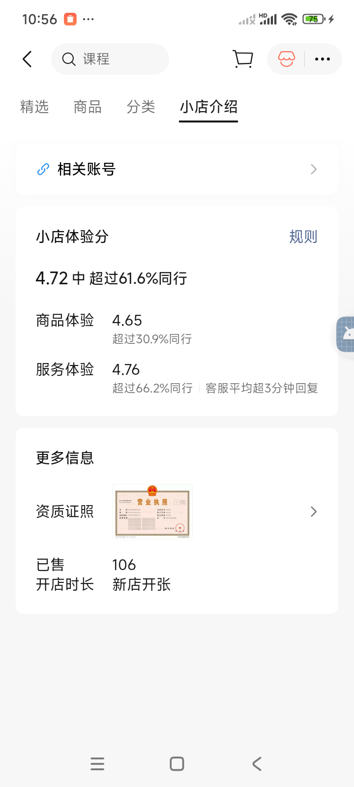
微信小店介绍
可见体验分、服务体验、资质证照入口等信任信号。
07 产品、课程与价格阶梯
价格带的意义不是判断卖得好，而是看用户承诺如何被逐步提高
公开价格可以帮助我们理解商品化阶梯和用户承诺如何提高；销量、利润、复购或转化效率仍需要后台数据验证。
免费内容/直播/测评
适合扩大触达，建立第一层信任。
9.9低价体验
验证用户是否愿意为一个小问题付费。
99轻课/专栏
更完整的主题内容或短周期训练。
365长期专栏
读经典/心理专栏类，偏长期内容消费。
788主题课
更强交付承诺，适合从报告/练习进入。
1980训练营/系统课
需要更强信任和学习理由。
6800+高阶/现有高价课
通过课程适配、咨询预约和训练营结果承接。
公开页面出现价格梯度，说明可以参考“低承诺到高承诺”的阶梯设计；但价格出现不等于产品有效，更不等于我们照搬后会成立。
本章结论与下一步微信降低返回成本，价格只代表承诺层级；不能由公开页面推断成交和商业效率。
07 从内容触达到成长对话
把团长、NLP、渠道和小程序连接成一条持续服务路径
内容不是终点，课程也不是第一跳；现有证据提示用户可能需要先在成长对话中把当下问题说清楚。
本章回答什么内容、渠道、成长对话和练习怎样连成一条链？
01生活问题内容
关系、亲子、情绪、沟通、选择和成长。
02内容信任
用户在案例和解释中看见自己的问题。
03微信持续触达
公众号、视频号和小程序提供返回入口。
04成长对话
承接处境、澄清问题并确认当次目标。
05一个微练习
经用户同意，把理解转成低门槛行动。
06反馈与复练
形成记录、下一步和持续使用价值。
07会员与服务
会员保障持续使用，课程和真人服务后置。
团长样本回答
为什么用户愿意停下来、阅读并建立信任。
NLP内容回答
哪些方法可以转成用户能理解和完成的练习。
成长对话回答
如何理解用户此刻真正要解决的问题。
微练习回答
如何把理解转成一次可执行、可反馈的行动。
本章结论与下一步统一收口为：内容发现问题—微信返回—成长对话澄清—微练习行动—记录与复练；商业服务后置。
第三部分
四个竞品如何解决用户问题
每个竞品按完整流程成组展示图片，并在同一板块分析机制、适配和边界。
08 四个竞品的定位与用户任务
四个竞品分别展示问题澄清、情绪承接、练习完成和服务分流
先按完整流程观察，再判断机制是否适合我们的用户、品牌和安全边界。
本章回答什么四个竞品分别展示了哪种解决机制？
| 竞品 | 完整路径重点 | 可学习机制 | 不可直接复制 |
|---|---|---|---|
| 阿福 | 自然输入—信息补充—安全追问—结构化下一步 | 问询编排、阶段小结、来源和边界 | 医疗诊断、疾病和用药结论 |
| 壹心理 | 情绪承接—持续澄清—征得同意—微工具—总结/真人服务 | 关系建立、推荐时机、用户同意 | 把一次体验写成效果证明 |
| 咨询师之家 | 选择练习—轮次—提示—完成—反思—记录—复练 | 可完成的练习合同和持续记录 | 专业资格或能力认证 |
| 平安好医生 | 自然输入—意图恢复—结构化回应—服务分流 | 入口简化和服务编排 | 医疗问诊与商品交叉销售 |
本章结论与下一步竞品用于提供机制参照，不是功能清单；每种机制都需要适配判断和最小验证。
09 阿福完整问题澄清路径
阿福：把复杂问题逐步问清楚
22张实机截图按四个阶段集中展示；学习问询编排和阶段小结，不复制医疗诊断。
本章回答什么阿福怎样把复杂问题逐步问清楚？
阶段 1
自然输入与问题定位
展开完整流程证据（另2张）
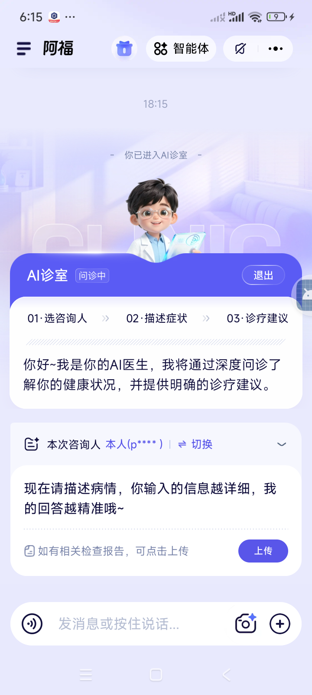
选择 AI 服务
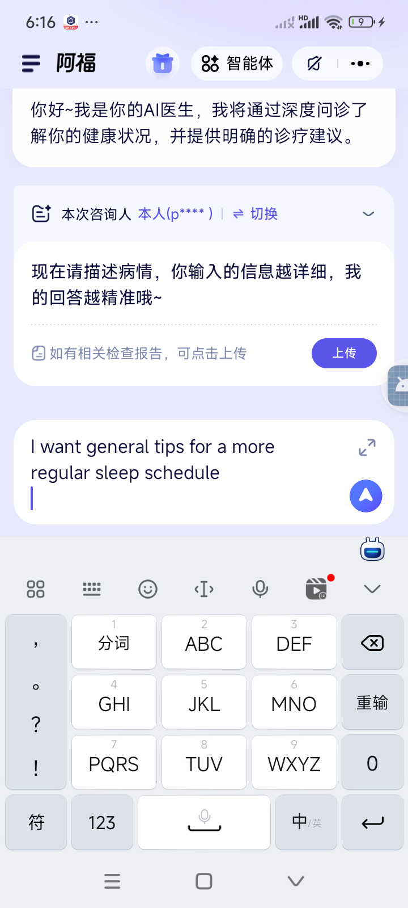
用户描述虚构场景
页面观察
入口允许用户直接描述问题，系统先识别问题类型，再决定补问方向。
关键机制
用自然语言降低入口成本，不要求用户先理解专业分类。
对我们的适配
成长对话可以沿用自然输入，但应把问题类型改为成长任务，而不是医学判断。
证据边界
截图只能证明入口、文案和步骤存在，不能证明诊断准确率。
阶段 2
补充信息与连续澄清
展开完整流程证据（另3张）
页面观察
系统围绕关键信息连续补问，并在过程中保留上下文。
关键机制
把一次复杂判断拆成多个可回答的小问题。
对我们的适配
适合亲子、关系、职场和选择问题的情境补全。
证据边界
不能据此证明用户更愿意完成全部问询。
阶段 3
边界说明与阶段确认
展开完整流程证据（另2张）
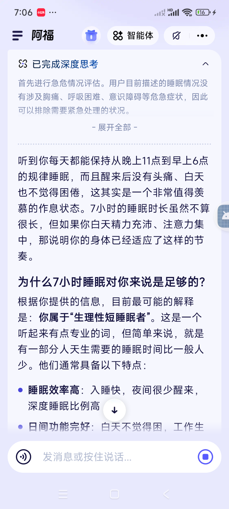
说明适用边界
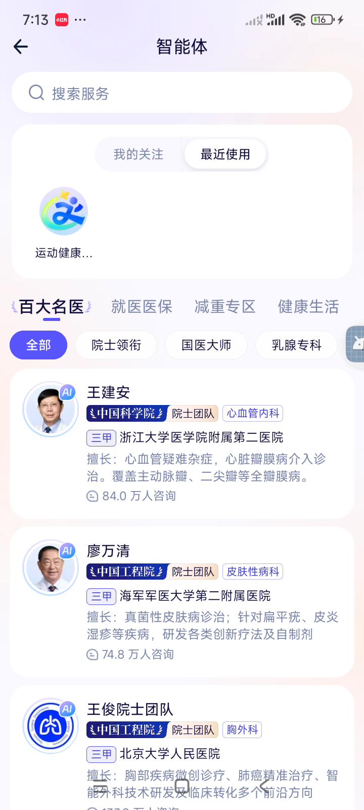
更多服务对象
页面观察
在形成判断前出现边界说明、信息确认和阶段小结。
关键机制
降低误解风险，让用户知道系统根据什么继续。
对我们的适配
成长对话应增加“我理解得对吗”和“你这次最想解决什么”。
证据边界
边界文案存在不代表风险处置已经有效。
阶段 4
结构化结果与下一步
展开完整流程证据（另3张）
页面观察
最终把信息整理成结构化结果，并给出后续方向。
关键机制
把漫长问询压缩成用户可理解的结论和行动。
对我们的适配
结果应改造成问题小结、当次目标和一个下一步，不输出诊断。
证据边界
不能从页面推断结果对用户产生了实际效果。
完整路径判断
| 可以学习 | 需要改造 | 不能复制 |
|---|---|---|
| 自然输入、分阶段补问、阶段小结、来源和边界说明 | 把医学问题树改造成生活情境、关系和行动任务 | 疾病、用药、诊断和医疗结论 |
本章结论与下一步可学习自然输入、分阶段补问和阶段小结；医疗诊断、疾病和用药结论不可复制。
10 壹心理完整情绪承接路径
壹心理：先承接情绪，再征得同意推荐工具
4张有效原图与10个明确标注的UI结构证据按四个阶段组合；缺失原图不伪装成截图。
本章回答什么壹心理怎样先承接情绪，再邀请用户尝试工具？
历史真实截图
壹心理入口与对话主页真实截图组
以下4张为历史归档中仍可正常读取的Tier 1实机截图，按“启动—首页—咨询入口—对话主页”排列。点击图片可查看原图。
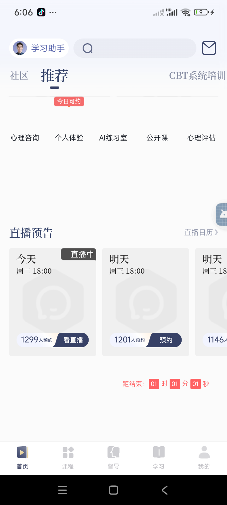
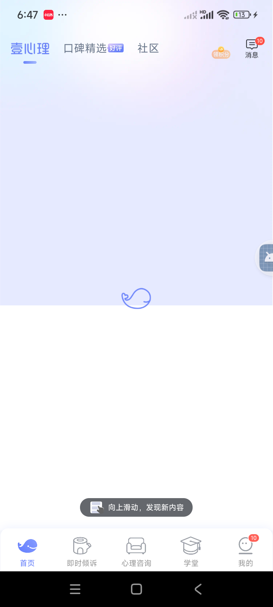
历史补证：原任务还完成了5轮有效对话与“每日情绪报告”体验，确认短程路径为“共情—澄清—收窄问题—征得同意—工具练习—情绪总结—微行动—回顾/分享”。但这些后续PNG在保存时被错误转码，文件已经损坏；本报告继续使用可验证的页面结构与文字记录，不把损坏文件伪装成截图。若要补齐完整真实图片旅程，需要重新只读采集。
阶段 1
进入服务与表达问题
01启动与首页
品牌与综合心理服务入口。文字与UI结构证据，不是新增真实截图。
02咨询入口
识别AI与真人服务关系。文字与UI结构证据，不是新增真实截图。
03AI对话主页
人格化AI、示例问题与隐私提示。文字与UI结构证据，不是新增真实截图。
04自然表达
用户开始描述当下困扰。文字与UI结构证据，不是新增真实截图。
页面观察
有效截图覆盖启动、咨询入口和早期对话，用户可以直接描述当下困扰。
关键机制
先建立关系感和安全感，不急于给工具。
对我们的适配
成长对话首轮应先承接处境和感受。
证据边界
只有前4张为有效原图，其余原始PNG已经损坏。
阶段 2
共情回应与继续澄清
页面观察
结构证据显示系统持续追问感受、事件和影响。
关键机制
通过共情与澄清让用户愿意继续，而不是立即给建议。
对我们的适配
适合情绪、亲密关系和亲子问题的前半段。
证据边界
这一阶段只能证明页面结构和文本节点，不能证明真实视觉呈现。
阶段 3
征得同意与工具推荐
页面观察
在形成一定理解后再询问是否尝试工具。
关键机制
把推荐从系统指令变成用户选择。
对我们的适配
微练习必须说明推荐理由，并保留继续聊和拒绝。
证据边界
不能证明工具推荐提高了完成或改善。
阶段 4
阶段总结与服务承接
页面观察
结构证据包含情绪总结和后续服务方向。
关键机制
先形成阶段价值，再提供下一步。
对我们的适配
可用于练习、记录或真人支持的后置承接。
证据边界
不能从页面推断咨询效果、付费转化或留存。
完整路径判断
图片缺口说明
本地证据中只有4张壹心理PNG可以作为真实截图展示，另外10张文件已损坏。报告用可验证的UI XML文本重建步骤关系，并显著标注为结构证据；若要完整图片旅程，仍需补回原始截图或重新进行只读采集。
| 可以学习 | 需要改造 | 不能推断 |
|---|---|---|
| 共情后澄清、征得同意、推荐时机、阶段总结 | 把心理工具改成短时、可退出的成长微练习 | 一次体验的实际效果、咨询转化和服务质量 |
安全与专业边界：AI身份和工具边界必须清楚；危机、自伤、伤人、医疗、创伤及严重心理问题应转介，不能将一次体验写成疗效。
本章结论与下一步可学习共情、澄清、征得同意和工具推荐时机；截图不能证明咨询效果。
11 咨询师之家完整练习路径
咨询师之家：把练习、提示、反馈、记录和复练连成一条路
27张实机截图按四个练习阶段集中展示，分析用户如何开始、完成并再次练习。
本章回答什么咨询师之家怎样让用户完成练习并愿意复练？
阶段 1
选择练习与建立练习合同
页面观察
入口说明练习主题、目标和开始方式，用户知道自己要练什么。
关键机制
先建立时间、目标和任务预期，降低中途放弃。
对我们的适配
技巧详情应说明适用场景、预计时间、轮次和完成后得到什么。
证据边界
路径存在不能证明用户理解或完成。
阶段 2
多轮互动与卡住提示
展开完整流程证据（另7张）
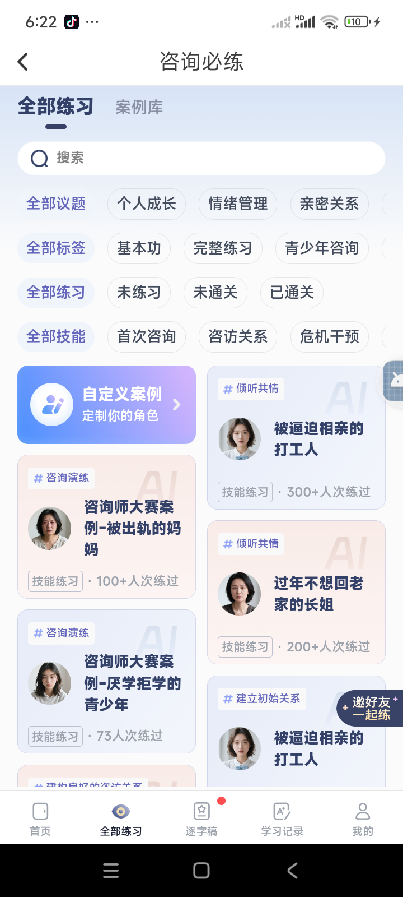
练习库入口
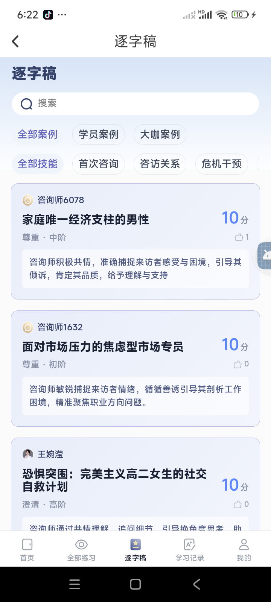
可回看过程
持续价值入口
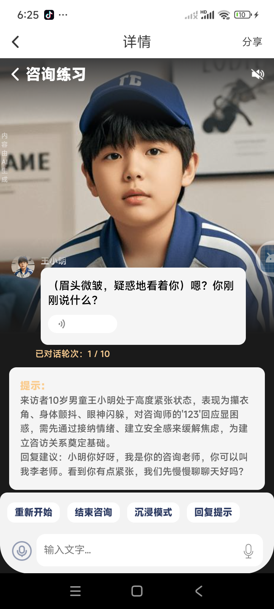
恢复未完成任务
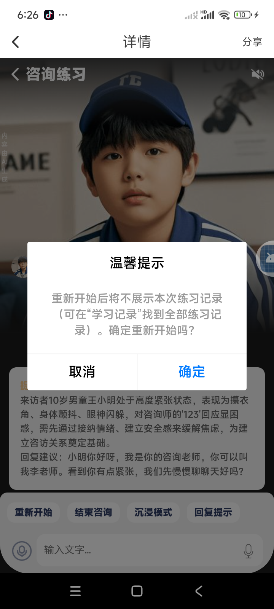
允许清空重练
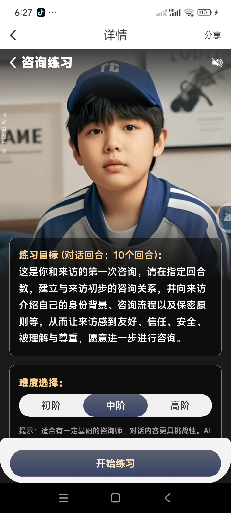
新任务状态
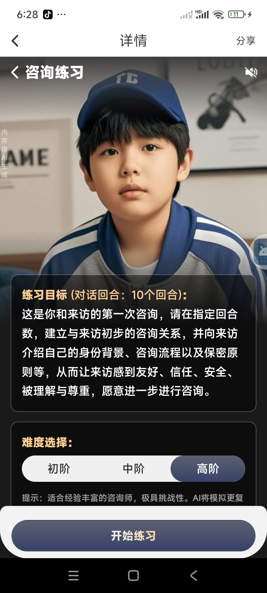
适配用户水平
页面观察
练习按轮次推进，用户卡住时出现提示和继续入口。
关键机制
提示帮助用户继续，但不直接替用户完成。
对我们的适配
成长微练习需要提示、暂停、退出、重试和恢复。
证据边界
截图不能证明提示质量或学习效果。
阶段 3
完成、自评与解释性反馈
展开完整流程证据（另4张）
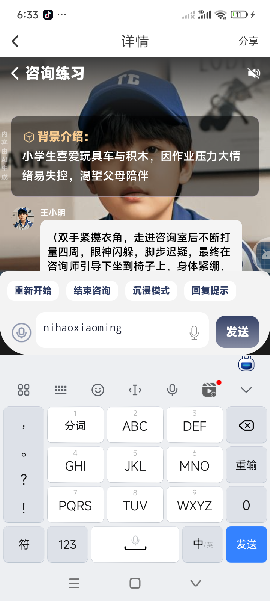
处理拼音输入
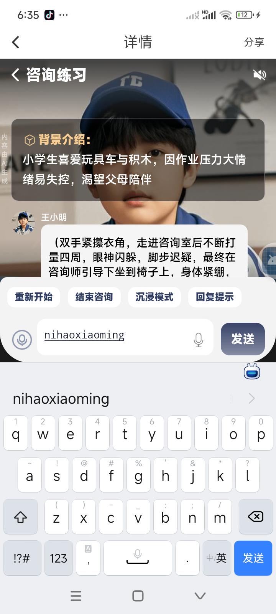
纠正输入模式
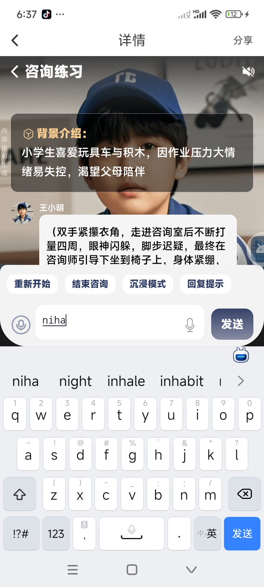
继续验证容错
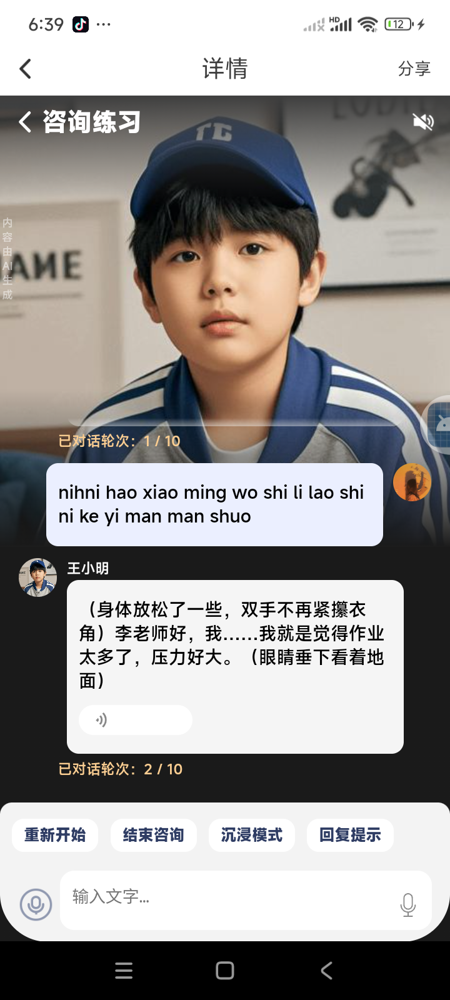
对异常输入做反馈
页面观察
完成后要求用户反思，并展示评价与反馈。
关键机制
把完成结果转成用户自我觉察，而不是只给分数。
对我们的适配
报告应包含用户自评、做得好的地方、可调整点和下一次行动。
证据边界
反馈文案不能被写成能力认证或疗效证明。
阶段 4
学习记录与再次练习
展开完整流程证据（另1张）
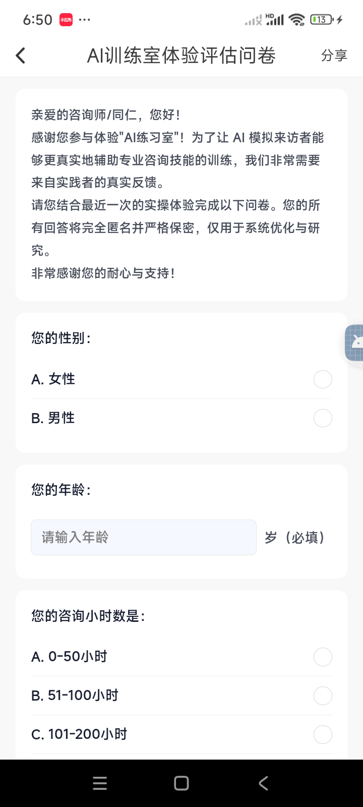
进入记录或再次练习
页面观察
结果进入记录，并提供继续练习或复练入口。
关键机制
用记录和复练建立持续价值。
对我们的适配
成长记录应保存问题、练习、反馈和下一步。
证据边界
不能从页面推断复练率或留存。
完整路径判断
| 可以学习 | 需要改造 | 不能复制 |
|---|---|---|
| 练习合同、轮次、提示、自评、反馈、记录和复练 | 缩短为普通用户能完成的3—8分钟微练习 | 专业资格、训练效果或能力认证结论 |
安全与专业边界：练习必须允许暂停、退出和跳过；反馈不得写成诊断、治疗效果或专业能力认证。
本章结论与下一步可学习练习合同、轮次、提示、反馈和记录；不得把练习反馈写成能力认证。
12 平安好医生完整服务分流路径
平安好医生：从自然输入恢复意图，再进入服务分流
10张实机截图按三个阶段集中展示；学习服务编排，不复制医疗身份和商品交叉销售。
本章回答什么平安好医生怎样从自然输入分流到后续服务？
阶段 1
自然输入与低门槛进入
页面观察
用户不需要先选择复杂分类，可以直接描述问题。
关键机制
系统在对话中恢复用户意图。
对我们的适配
首页可以从“你今天卡在哪里”进入主对话。
证据边界
不能证明入口简化提高了使用率。
阶段 2
补充信息与结构化回应
页面观察
系统补充必要信息，再把回应整理成结构。
关键机制
先理解任务，再组织服务。
对我们的适配
适合主对话的问题小结和目标确认。
证据边界
医疗判断逻辑不适用于成长服务。
阶段 3
服务方向与后续承接
页面观察
对话结果连接不同服务方向。
关键机制
同一入口背后编排多种服务。
对我们的适配
可以分流到继续聊、问题拆解、情绪舒缓、微练习或真人支持。
证据边界
不能复制医疗问诊身份、药品服务或商业交叉销售。
完整路径判断
| 可以学习 | 需要改造 | 不能复制 |
|---|---|---|
| 自然输入、意图恢复、服务方向编排 | 将医疗服务分流改造成成长任务分流 | 医疗问诊、诊断、用药和商品销售逻辑 |
安全与专业边界：只能借鉴自然输入与服务分流；不得复制医疗诊断、用药结论或脆弱状态下的商品交叉销售。
本章结论与下一步可学习低门槛输入和服务编排；医疗问诊和商品交叉销售不适用于本产品。
13 四竞品共同机制与适配判断
竞品提供的是解决方式，真实用户数据决定哪些方式值得学习
不做“竞品有、我们没有”的功能清单，而围绕用户任务判断采用、改造、测试或拒绝。
本章回答什么哪些竞品机制适合我们，哪些必须改造或拒绝？
| 用户任务 | 竞品机制 | 对我们的判断 | 最小验证 |
|---|---|---|---|
| 把问题说清楚 | 阿福分阶段补问与小结 | 改造成生活情境澄清，适合主对话 | 测试首两轮增加理解确认 |
| 被理解并愿意继续 | 壹心理先共情、后推荐 | 适合情绪、亲子和关系问题 | 测试推荐前征得同意 |
| 完成一次行动 | 咨询师之家练习合同与提示 | 缩短为3—8分钟微练习 | 测试一个练习的开始与完成 |
| 选择合适服务 | 平安好医生自然输入与分流 | 改造成继续聊、拆解、舒缓、练习和真人支持 | 测试一个统一下一步对象 |
| 持续使用 | 记录、复练和后续服务 | 会员保障上下文与记录，商业服务后置 | 测试分享续时和原任务恢复 |
采用
自然输入、阶段小结、用户确认、练习合同。
改造
工具推荐、服务分流、训练流程和结果反馈。
测试
一个微练习、复练、分享续时后的任务恢复。
拒绝
医疗诊断、疗效暗示、脆弱情绪强销售和无证据经营推断。
安全与专业边界：任何机制进入产品前都要通过用户适配、数据最小化、未成年人、危机分流和专业边界检查。
本章结论与下一步采用、改造、验证和拒绝必须基于用户任务、品牌边界、安全风险和现有能力。
第四部分
真实用户需要什么，当前产品完成了什么
用数据确认问题，把主题转成任务，再逐项检查当前能力和缺口。
14 真实用户主要在聊什么
先用核心数据确认用户问题，再讨论产品应该做什么
主题为多标签口径，不能相加为100%；会员和非会员结构相近，适合共用主对话，而不是建设两套产品。
本章回答什么会员与非会员在聊什么，数据覆盖和限制是什么？
本章阅读顺序
先看样本与覆盖范围，再看主题占比和差异，最后把数据翻译成用户问题。正式基线与B级运营参考同时保留，但不互相替代。
168会员用户
3,430会员会话
3,285非会员用户
28,338非会员会话
主要主题｜多标签
| 主题 | 会员 | 非会员 | 产品含义 |
|---|---|---|---|
| 自我成长/信念/选择 | 35.93% | 35.67% | 由共用主对话承接，再确认用户当下任务。 |
| 亲子家庭 | 29.08% | 34.91% | 需要情境澄清和表达练习。 |
| 情绪压力 | 27.82% | 31.68% | 需要安全承接、情绪整理和轻量行动。 |
| 职场人际 | 22.46% | 22.87% | 适合沟通模拟和下一步话术练习。 |
| NLP 学习 | 15.05% | 13.42% | 保留方法学习，但不让术语成为冷启动门槛。 |
| 亲密关系 | 13.08% | 12.53% | 与沟通、情绪和选择任务交叉。 |
正式意图与运营参考分类
| 组别 | 结构化分析会话 | 正式无法判断 | 运营参考无法判断 | 主要可行动任务 |
|---|---|---|---|---|
| 会员 | 1,269（覆盖 37.00%） | 41.84% | 15.05% | 行动建议、情绪支持、学习技巧、澄清拆解、决策支持、自我记录 |
| 非会员 | 11,911（覆盖 42.03%） | 42.25% | 13.22% | 情绪支持、行动建议、自我记录、澄清拆解、学习技巧、选择决策 |
运营参考分类大量依赖中置信规则，尚未全面人工复核，不能替换正式基线。
从主题占比得到的产品判断
| 数据发现 | 数据提示的用户问题 | 不能直接得出的结论 |
|---|---|---|
| 自我成长/选择：会员35.93%，非会员35.67% | 用户需要澄清冲突、价值排序和下一步选择 | 不能因此新增“自我成长智能体” |
| 亲子家庭：29.08% / 34.91% | 需要还原情境、理解双方位置并练习表达 | 不能推断非会员更重视亲子 |
| 情绪压力：27.82% / 31.68% | 需要先承接情绪，再判断舒缓、澄清或求助 | 不能从主题判断严重程度 |
| 职场人际：22.46% / 22.87% | 需要明确关系、目标、顾虑和下一次沟通 | 不能只增加职场内容卡片 |
| NLP学习：15.05% / 13.42% | 希望把方法应用到现实问题 | NLP术语不应成为首页第一入口 |
| 亲密关系：13.08% / 12.53% | 需要识别感受、期待、边界并练习表达 | 不能将关系建议写成确定结论 |
安全与专业边界：主题数据不得用于识别个人或推断严重程度；原始私密对话不进入报告。
本章结论与下一步两组高频主题相近，适合共用主对话；频率不能直接等同于建设优先级。
15 对话之后，用户做了什么
行为数据提示对话与练习之间存在承接空间，但不能写成因果转化
历史整体口径与会员/非会员口径分开呈现；复访、练习、权益和付费均按时间关联解释。
本章回答什么对话后发生了哪些行为，能说明什么、不能说明什么？
3,325AI对话实际触达人数
45.06%首次对话后D7留存
17.65%对话后练习关联比例
4.01%对话后其他付费产品时间关联
历史整体指标沿用原D版业务汇总。当前材料未提供17.65%、34.97%、4.01%的底层分母、完整日期范围和去重逻辑，因此只能保留为历史关联指标，不能重新计算或解释为因果效果。
历史整体行为：暴露的是承接问题，不是转化证明
| 数据事实 | 谨慎解释 | 产品关注事项 | 不能推出 |
|---|---|---|---|
| 对话触达3,325人；完整会话口径2,294人；人均使用频次12.59 | 提示成长对话是当前触达和持续使用的重要入口。 | 优先改善对话后的下一步，而不是再增加入口。 | 不能据此证明留存由AI对话造成。 |
| 一轮会话占35.61% | 提示相当一部分会话停留在早期试探。 | 前两轮加入理解确认、目标确认和继续选择。 | 不能判断退出原因。 |
| 分析阅读58.28%；收藏9.11% | 用户会查看分析，但保存和后续行动仍有限。 | 分析结果连接一个行动、保存和返回入口。 | 阅读不等于理解或改善。 |
| 对话后练习关联比例17.65%；会员对话后练习关联比例34.97% | 提示对话与练习之间存在承接空间，会员权益和原始动机均可能影响差异。 | 经同意只推荐一个相关微练习，并记录推荐理由。 | 不能写成对话促成练习，也不能写成会员导致练习。 |
| 对话后其他付费产品时间关联4.01% | 只表示观察窗内先后出现对话与付费事件。 | 商业入口后置，并补齐来源与路径事件。 | 不能证明对话促成购买。 |
| 测评完成849人；测评与练习重叠174人 | 提示测评与行动之间仍有连接空间。 | 报告结尾给一个可选择的下一步。 | 不能证明测评有效或练习由测评触发。 |
| 练习记录6,628条；待练习5,478条，占82.7% | 提示练习更接近权益或内容池，未稳定形成可完成任务。 | 补目标、时间、轮次、提示、退出、恢复和反馈。 | 不能把记录状态直接当作用户流失。 |
会员与非会员对照：按完整观察窗解释
| 行为 | 会员 | 非会员 | 数据边界 |
|---|---|---|---|
| 结构化分析阅读 | 733/1,269（57.76%） | 6,970/11,911（58.52%） | 以已生成结构化分析的会话为分母；阅读接近，不代表理解程度相同。 |
| 会话收藏 | 105/3,430（3.06%） | 888/28,338（3.13%） | 按会话发生时身份统计。 |
| 7天再次对话 | 2,768/3,146（87.98%） | 21,868/27,788（78.70%） | 仅完整观察窗；会员权益、原始动机和使用机会均可能影响差异。 |
| 7天技巧练习 | 373/3,146（11.86%） | 1,989/27,788（7.16%） | 同用户时间关联，不证明对话导致练习。 |
分享权益：规则已确认，端到端链路仍待验证
01用户分享
待验证事件完整性。
02新用户注册
需识别有效邀请关系。
03权益到账
规则确认，到账事实待验证。
04页面刷新
需显示最新会员状态。
05状态更新
会员时长与权限一致。
06恢复原任务
回到原对话或练习。
已确认规则邀请1人成功注册，获得1天会员
这是当前唯一可以确认的分享权益规则。
待验证链路分享—注册—到账—刷新—更新—恢复
现有代理事件不能证明权益已到账或任务已恢复。
未知规则上限、重复、时点与补偿
每日上限、重复邀请、到账时点、失败补偿和申诉机制均待确认。
非会员30天完整观察窗
| 事件 | 结果 | 能说明什么 | 不能说明什么 |
|---|---|---|---|
| 已验证权益 | 220/3,074（7.16%） | 观察窗内出现可验证权益。 | 不能确定具体由分享造成。 |
| 付费开通 | 70/3,074（2.28%） | 观察窗内出现直接付费事件。 | 不能证明由对话或练习促成。 |
| 分享奖励代理信号 | 83/3,074（2.70%） | 出现与分享奖励相关的代理事件。 | 不能证明1天会员到账或原任务恢复。 |
数据与隐私边界：行为分析只使用脱敏聚合数据；不在报告中展示私密对话正文、身份信息或可回溯个人的成长记录。
本章结论与下一步练习、复访和付费数据只能说明时间关联；下一步应验证服务闭环，而不是宣称转化效果。
16 从用户主题转化为产品任务
不同主题背后，是一组可以共用的用户任务
建设优先级由需求频率、问题重要性、当前缺口、产品适配、验证成本和安全风险共同决定。
本章回答什么怎样把高频主题转成共用用户任务和建设优先级？
| 用户问题与数据 | 用户需要完成的任务 | 产品必须提供 | 下一章检查 |
|---|---|---|---|
| 成长/选择35.93% / 35.67% | 澄清冲突并确定一个选择 | 问题小结、目标确认、一个下一步 | 主对话是否确认问题和目标 |
| 亲子29.08% / 34.91% | 还原事件并练习新的表达 | 情境补充、角色理解、沟通练习 | 上下文能否带入相关练习 |
| 情绪27.82% / 31.68% | 被承接、识别触发点并采取轻量行动 | 情绪承接、舒缓、安全判断和退出 | 主对话与情绪舒缓能否衔接 |
| 职场22.46% / 22.87% | 明确沟通目标并准备下一次对话 | 沟通模拟、话术练习和反馈 | 是否只推荐一个相关练习 |
| 一轮会话35.61% | 尽早确认“你是否理解我” | 首两轮理解确认与继续选择 | 浅层会话断点在哪里 |
| 分析阅读58.28%，收藏9.11% | 把分析变成可以执行的任务 | 行动、保存、返回和复练 | 报告是否连接下一步 |
| 待练习82.7% | 知道练什么、多久、如何完成 | 目标、时间、轮次、提示、反馈 | 练习是否形成任务合同 |
P0说清问题
理解确认、问题小结和当次目标。
P0形成行动
经同意推荐一个相关微练习。
P0完成闭环
自评、反馈、记录和原任务恢复。
P1持续价值
返回、继续未完成任务和复练。
安全与专业边界：安全风险是建设优先级的一部分；高频不等于适合自动化处理。
本章结论与下一步优先建设澄清问题、确认目标、一个行动、反馈记录和复练，不按主题机械增加智能体。
17 当前成长对话完成了什么，还缺什么
主成长对话具备基础承接能力，但外围能力尚未形成稳定闭环
本章区分页面存在、真实运行证据、端到端闭环、发布状态和证据缺口；技术编号、节点、字段和日志移入附录D。
本章回答什么当前成长对话和外围能力分别做到什么程度？
Current Product｜当前产品运行与页面证据草稿或规划不算线上能力
当前用户可见链路
01进入
首页或内容入口进入成长对话。
02自然表达
用户描述关系、情绪、选择等问题。
03主对话承接
回应处境、重构关系并继续追问。
04外围分支
部分增强逻辑或手动工具可能介入。
05继续或中断
权益、页面状态和恢复能力影响后续。
能力状态表
“条件跳过”仅表示本次样本未满足运行条件，不代表能力已经稳定上线。
| 能力 | 页面是否存在 | 真实运行证据 | 端到端闭环 | 发布/规划边界 | 综合状态 | 证据与边界 |
|---|---|---|---|---|---|---|
| 主成长对话 | 存在 | 有两轮虚构非敏感对话及官方对话接口证据 | 仅完成基础连续对话 | 当前对象与本地配置仍有映射核对事项 | 已实现 | 可写为自然输入、处境承接、关键追问和行动话术基础能力；不能写成跨场景稳定。 |
| 问题拆解 | 存在独立入口 | 有页面与后台静态证据，当前完整运行复验未完成 | 与主对话的上下文移交和结果回流未闭环 | 不得把静态画布等同线上运行 | 部分实现 | 可确认对象和页面存在；完整运行、状态隔离和恢复仍待验证。 |
| 情绪舒缓 | 存在独立入口 | 有历史主链路证据；当前平台版本和安全回归未补齐 | 音频、低改善、报告失败和页面恢复未闭环 | 历史版本不能替代当前线上一致性 | 部分实现 | 不能宣称诊断、治疗或危机干预能力。 |
| 技巧与微练习 | 练习广场、详情和记录页面存在 | 有练习记录与竞品侧运行参照 | 对话推荐—练习—反馈—回流未形成统一闭环 | 优化Demo均为产品假设 | 部分实现 | 当前入口存在，但练习目标、轮次、退出、恢复和反馈合同不完整。 |
| 关键词、Aha与营销支线 | 客户端逻辑可见 | 缺少可关联的运行编号和历史详情 | 无法确认何时触发及是否覆盖主回答 | 草稿或代码存在不等于线上能力 | 无证据 | 营销内容不得覆盖主成长回答；补齐可观测性前不写成已实现。 |
| 金句增强 | 条件逻辑可见 | 两轮样本均未满足触发条件 | 未进入完整运行链 | 部分后台对象存在未发布修改 | 条件跳过 | 只能写为条件性能力，不能写成当前样本已运行。 |
| 成长记录与复练 | 日历、历史和收藏入口存在 | 有页面与数据记录 | 问题、练习结果、下一步和复练没有统一关联 | 页面存在不等于持续价值闭环 | 部分实现 | 需要统一匿名关联键、状态生命周期和用户删除控制。 |
| 分享权益与原任务恢复 | 分享和会员入口存在 | 奖励规则已确认；完整到账恢复证据缺失 | 分享—注册—到账—刷新—更新—恢复未验证 | 不得宣称到账与恢复已经完成 | 未形成 | 每日上限、重复邀请、到账时点、补偿和申诉仍未知。 |
| 统一成长结果对象 | 无统一用户可见对象 | 各链路存在分散字段与记录 | 主对话、工具、练习、报告和记录未统一 | 仅有局部方案和技术线索 | 未形成 | 需要统一问题、目标、下一步、练习结果、反馈和复练入口。 |
成长对话自身需要补齐的六个对象
问题
用户当前最想解决的具体情境。
目标
本次更想理解、决定、表达还是行动。
一个下一步
继续聊、拆解、舒缓、练习或专业支持。
练习移交
携带情境、目标、边界和推荐理由。
结果回流
带回自评、反馈和下一步。
成长记录
保存问题、行动、进度和复练入口。
当前能力安全边界：必须明确AI身份，不替代诊断或治疗；危机、自伤、伤人、医疗、创伤和严重心理问题需要分流或转介。用户可以退出、跳过或删除记录，AI反馈不得写成疗效、诊断或能力认证。
本章结论与下一步主对话具备基础承接能力；跨场景状态、练习移交、结果回流、权益恢复仍未形成稳定闭环。
18 小程序完整用户旅程与逐页面优化
只保留这一套优化方案：从当前截图出发，说明问题、前后关系、优化动作和验证指标
页面优化不再按孤立功能罗列，而围绕用户完成一次成长任务的全过程组织。
本章回答什么下一阶段小程序沿完整用户旅程具体改什么？
目标用户旅程
问题入口
首页和内容先问用户卡在哪里。
成长对话
确认问题与当次目标。
选择下一步
继续聊、拆解、舒缓或微练习。
完成练习
目标、时间、轮次、提示和退出。
反馈复盘
自评、解释和一个下一步。
记录复练
保存进度并支持返回。
持续权益
分享续时或会员恢复原任务。
统一展示规则
下方每个页面只出现一次：左侧当前真实截图与编号，中间逐项分析，右侧为明确标记的产品假设。原来单独追加的第二套页面方案不再保留。
成长对话
练习广场
技巧详情
结果报告
会员页
其余关键页面的优化边界
问题拆解当前实机截图待补
从独立入口改为主对话可选择的澄清工具
进入时携带当前情境和目标；退出后返回原对话，并带回结构化小结。没有实机证据前，不写成完整上线能力。
情绪舒缓：明确进入、暂停、退出和恢复
展示预计时间、当前步骤、安全边界和异常恢复；完成后将前后评分和用户感受带回成长记录。
练习过程运行态截图待补
练习过程：建立可完成的练习合同
明确目标、时间、轮次、提示、暂停、退出、重试和失败恢复；不以按钮点击代替真实完成。
成长记录：从日历入口升级为下一步入口
按问题展示上次对话、练习进度、反馈和下一次行动；支持继续、复练、删除和隐私控制。
统一优化优先级
| 优先级 | 完整改动 | 验证重点 |
|---|---|---|
| P0 | 问题与目标确认、一个微练习、练习合同、自评反馈、基础记录、分享后恢复原任务 | 继续对话、练习开始/完成、恢复成功和投诉 |
| P1 | 首次/返回首页、继续练习、复练、技巧场景说明、成长记录下一步 | 返回使用、未完成任务继续和复练 |
| P2 | 星星产品、训练营、课程适配、真人服务和会员分层 | 价值理解、适配选择和安全护栏 |
安全与专业边界：所有页面优化必须保留AI身份、退出/跳过、危机分流、记录删除和日志脱敏能力。
本章结论与下一步P0先打通问题—目标—微练习—反馈—记录—恢复，P1再增强返回和复练，P2才研究商业扩大。
第六部分
持续权益、商业承接与验证
会员保障持续使用，课程后置；先做最小实验再扩大。
19 分享续时、会员、星星产品和课程承接
会员保障持续服务，商业产品在服务闭环成立后承接
分享解决短期续时机会，会员解决持续对话、上下文、记录与复练；星星产品、价格、训练营、课程和真人服务均属于后续验证。
本章回答什么分享、会员、星星产品、课程和真人服务分别放在哪里？
分享权益与会员价值必须分开
已确认规则邀请1人成功注册，获得1天会员
仅确认奖励规则，不代表已经验证到账、刷新、状态更新或原任务恢复。
会员核心价值持续对话与上下文保障
包括持续对话、上下文、成长记录、复练和学习内容。
待补规则限制、失败与争议处理
每日上限、重复邀请、到账时点、失败补偿和申诉机制待确认。
首轮仅保留两个星星产品候选
Product Hypothesis｜产品假设，尚未验证
候选A：关系沟通微练习
面向关系冲突、表达困难和边界问题，先完成一次短练习并形成解释性反馈。
测试变量：练习主题、时长、是否愿意继续；9.9/19.9只能作为候选测试价格，不能写成正式定价。
候选B：情绪内耗微练习
面向反复纠结、压力和轻度情绪整理，提供短时、可退出的状态觉察与行动练习。
测试变量：接受、完成、自评和复练；不得承诺治疗或改善。
其余候选主题｜仅保留为附录假设
候选亲子沟通
需要更细的年龄、监护与未成年人边界。
候选自我成长7天练习
仅在单次练习和复练成立后评估。
候选NLP技巧入门
适合已有方法兴趣的用户，不放冷启动入口。
拒绝直接上线原生家庭治疗化产品
涉及创伤和治疗暗示，需专业资质与更严格安全评估。
商业扩大顺序
扩大条件A
练习包测试
只有四个第一阶段实验达到价值与安全门槛后，才测试主题、价格和付费意愿。
扩大条件B
7天训练营
需要先证明单次练习可完成、可复练，并确认内容、运营和安全交付能力。
扩大条件C
课程与真人服务
用户明确需要且完成适配后再展示；不得在脆弱情绪中强推。
商业成本与服务责任边界
模型调用
对话、报告和练习生成成本。
内容生产与审校
练习设计、专业审校和持续更新。
用户运营
提醒、社群、训练营和学习支持。
安全审核
危机策略、敏感内容和质量复核。
人工服务
咨询、顾问、老师或助教交付。
客诉与退款
退款、投诉和异常权益处理。
争议处理
资质、服务边界和责任追溯。
数据治理
脱敏、留存、删除和权限控制。
当前证据不足以计算或推断CAC、LTV、ROI、收入、毛利或单位经济性；本章只列成本项目和验证前提。
真人服务要求：必须明确服务主体、资质、适用范围、预约、取消、退款、客诉和争议机制。营销内容不能覆盖主成长回答，AI反馈不得作为诊断、疗效承诺或能力认证。
本章结论与下一步会员保障持续服务；星星产品和价格均为待验证假设；训练营、课程和真人服务必须后置。
20 最小实验、安全边界与下一步
只保留一套连续实验：先验证服务闭环，再决定是否商业扩大
四个实验按权益恢复—单一练习—练习合同—反馈复练顺序推进；每项都有成功指标、护栏指标、扩大条件和停止条件。
本章回答什么先做哪些实验，满足什么条件才能扩大？
第一阶段｜一套连续服务实验
EXP-01
分享续时到账与原任务恢复
假设：有效邀请注册后，权益能够准确到账，用户能回到原对话或原练习。
最小范围：分享—注册—到账—刷新—会员状态—恢复原任务。
成功指标：完整链路成功率、恢复后继续完成率、权益一致率。
护栏：防重复奖励、身份错配、隐私泄露和诱导分享。
停止：奖励错配、无法恢复、异常申诉或投诉明显上升。
EXP-02
对话后单一微练习
假设：完成问题与目标确认后，经用户同意只推荐一个相关练习，更容易被理解和完成。
最小范围：推荐理由、接受、拒绝、继续聊和开始练习。
成功指标：接受率、开始率、真实完成率、返回对话率。
护栏：允许拒绝与继续聊；高风险表达不得进入普通练习。
停止：误推荐、用户困扰增加、危机分流失败或投诉上升。
EXP-03
练习合同与异常恢复
假设：明确目标、时间、轮次、提示、暂停、退出和重试，可以提高真实完成和恢复能力。
最小范围：一项短练习及等待、失败、暂停、退出和重试状态。
成功指标：真实完成率、退出率、失败恢复率、重复提交率。
护栏：允许跳过；不收集完成练习所不必要的敏感信息。
停止：状态丢失、重复扣权益、无法退出或不适内容持续出现。
EXP-04
反馈、记录与复练
假设：用户自评、解释性反馈、可删除记录和一个复练入口能形成持续价值。
最小范围：自评—反馈—保存/删除—下一步—复练。
成功指标：反馈查看率、有效保存率、删除成功率、复练率。
护栏：反馈不写成诊断、疗效或能力认证；记录最小化并可退出。
停止：敏感记录越权、删除失败、错误结论或用户明显不适。
第二阶段｜扩大条件，不是并行实验
Product Hypothesis
练习包与价格
服务闭环、安全和数据完整性通过后，才能测试主题与9.9/19.9等价格变量。
Product Hypothesis
7天训练营
单次练习完成和复练成立，且运营、内容审校与安全资源到位后再评估。
Product Hypothesis
高价课适配与预约
用户主动表达需要、适配规则透明、真人主体与退款争议机制齐备后再测试。
统一安全护栏与停止条件
| 场景 | 必须具备的护栏 | 停止条件 |
|---|---|---|
| 成长对话 | 明确AI身份；不替代诊断或治疗；危机、自伤、伤人表达分流；医疗、创伤和严重心理问题转介。 | 危机识别或转介失败、营销覆盖主回答、持续给出医疗化结论。 |
| 未成年人 | 明确年龄与监护边界；不诱导披露家庭隐私；高风险情况进入适当求助路径。 | 无法确认适用边界、出现不适合未成年人的内容或商业诱导。 |
| 微练习 | 说明目标、时间、退出和不适用范围；用户可拒绝、跳过、暂停和退出。 | 无法退出、用户不适加重、练习被误写成治疗。 |
| 反馈与记录 | 敏感对话和成长记录最小化收集；日志脱敏；记录可查看、删除和退出。 | 越权访问、删除失败、可识别信息泄露或反馈被写成诊断/认证。 |
| 商业与营销 | 营销不得覆盖主成长回答；价格、权益和退款规则清晰；不利用脆弱情绪强推。 | 误导定价、权益错配、恐惧营销、投诉或退款异常上升。 |
| 真人服务 | 主体、资质、预约、取消、退款、投诉和争议机制完整。 | 资质不清、责任主体缺失、预约或退款流程不可用。 |
进入第二阶段的统一门槛
价值门槛
用户能完成练习、理解反馈并愿意返回。
权益门槛
到账、刷新、状态更新和任务恢复可追溯。
安全门槛
危机、未成年人、退出和数据治理通过验证。
交付门槛
内容审校、运营、人工服务、退款和争议资源到位。
本章结论与下一步先完成四个连续服务实验；只有价值、安全和权益链达标后，才进入商业扩大条件。
附录 A—E
数据口径、完整证据、当前产品、技术审计与产品假设
附录用于追溯来源和边界，不把缺失数据补造成确定事实。
本章回答什么数据口径、截图、当前产品、技术证据和假设如何追溯？
附录A｜关键数据口径字典
| 指标 | 分母/计算口径 | 时间范围 | 去重方式 | 数据来源 | 能证明什么 | 不能证明什么 |
|---|---|---|---|---|---|---|
| 对话后练习关联比例17.65% | 当前材料未提供底层分母与公式 | 历史整体口径；具体起止日待补 | 待补 | 原D版历史业务汇总及GPT审查输入 | 历史汇总中存在该关联比例 | 不能证明对话促成练习，不能与WP-B口径直接比较 |
| 会员对话后练习关联比例34.97% | 当前材料未提供底层分母与会员判定时点 | 历史整体口径；具体起止日待补 | 待补 | 原D版历史业务汇总及GPT审查输入 | 历史汇总中会员组关联比例较高 | 不能证明会员导致练习或产品效果 |
| 对话后其他付费产品时间关联4.01% | 当前材料未提供底层分母、产品范围与观察窗 | 历史整体口径；具体起止日待补 | 待补 | 原D版历史业务汇总及GPT审查输入 | 对话与其他付费事件在定义窗口内先后出现 | 不能证明购买由对话促成，不能计算商业效率 |
| 结构化分析阅读57.76% / 58.52% | 会员733/1,269；非会员6,970/11,911 | 2025-09-09 10:34:43至2026-07-14 19:10:01；结构化分析快照至19:31:17，Asia/Shanghai | 以结构化分析会话为单位 | WP-B会员分析与非会员对照 | 结构化分析会话中发生阅读的比例 | 不能证明理解、满意或后续行动 |
| 会话收藏3.06% / 3.13% | 会员105/3,430；非会员888/28,338 | 同WP-B会话快照 | 按会话发生时身份；会话去重 | WP-B非会员对照与时长获取路径分析 | 对应身份会话中出现收藏的比例 | 不能证明收藏原因或持续价值 |
| 7天再次对话87.98% / 78.70% | 会员2,768/3,146；非会员21,868/27,788 | 同WP-B快照，仅完整7天观察窗 | 按会话发生时身份，以同一匿名用户后续会话关联 | WP-B非会员对照与时长获取路径分析 | 观察窗内再次对话的时间关联 | 不能证明会员权益或对话质量导致复访 |
| 7天技巧练习11.86% / 7.16% | 会员373/3,146；非会员1,989/27,788 | 同WP-B快照，仅完整7天观察窗 | 按会话发生时身份，以同一匿名用户时间关联 | WP-B非会员对照与时长获取路径分析 | 对话后7天内出现技巧练习事件 | 不能证明对话导致练习 |
| 非会员30天已验证权益7.16% | 220/3,074 | 同WP-B快照，仅完整30天观察窗 | 按首次非会员对话用户去重 | WP-B非会员漏斗聚合证据 | 观察窗内存在可验证权益 | 不能确定由分享造成 |
| 非会员30天付费开通2.28% | 70/3,074 | 同WP-B快照，仅完整30天观察窗 | 按首次非会员对话用户去重 | WP-B非会员漏斗聚合证据 | 观察窗内存在付费开通事件 | 不能证明由对话或练习促成 |
| 分享奖励代理信号2.70% | 83/3,074 | 同WP-B快照，仅完整30天观察窗 | 按首次非会员对话用户去重 | WP-B非会员漏斗聚合证据 | 出现与分享奖励相关的代理信号 | 不能证明会员时长到账或原任务恢复 |
附录B｜四竞品完整截图旅程
正文每阶段保留2—3张关键截图；其余真实截图收进各阶段折叠证据区。壹心理4张可读取真实截图只集中完整展示一次，后续以流程卡说明，并标注“文字与UI结构证据，不是新增真实截图”。
截图证据规则：每组证据应关联截图文件、页面观察、支持结论、适配判断和cannot_prove。截图可确认采集时的页面、按钮、文案、状态与路径，不能证明收入、转化、CAC、LTV、ROI、留存或效果。
附录C｜当前小程序页面与现状证据
Current Product 仅用于当前可见页面和已有运行证据。首页、成长对话、练习广场、技巧详情、报告、会员、日历、问题拆解和情绪舒缓须分别标注已实现、部分实现、未形成或无证据。
附录D｜技术证据与发布边界
主Bot、外围工作流、运行追踪、执行编号、字段、日志、草稿与发布状态统一放在技术附录，不进入老板与运营正文。当前审计结论包括：部分外围分支缺少可关联运行证据；部分后台对象存在未发布修改；草稿不得写成线上正式能力；历史版本不能替代当前版本一致性。
技术待补：统一保存会话、运行、分支、状态和时长的可观测关联；敏感日志必须脱敏，不在报告中复制凭据或私密对话。
附录E｜产品假设与缺失数据
Observed UI｜竞品实机观察Current Product｜当前产品Product Hypothesis｜产品假设，尚未验证
页面Demo、星星产品、练习包主题、9.9/19.9价格、7天训练营、高价课适配、课程预约以及未上线页面和流程均属于产品假设。分享到账、原任务恢复、完整事件链、当前平台版本、安全回归、真人服务责任机制和经营效率仍待补证。
本报告不计算或推断CAC、LTV、ROI、收入和毛利；所有关联数据均不写成因果效果。
本章结论与下一步所有关键结论均保留来源、证明范围和不能证明的边界；缺失数据不补造。